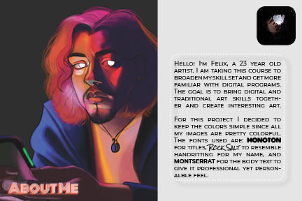

Home ✨ Raster ✨ Vector ✨ Time Based Media ✨ Print Layout ✨ About the Artist ✨
InDesign was different than all the other projects because instead of creating and editing images, you’re laying them out for print. There were so many options and so many things to do. Truly a fun program but it was challenging since there were so many possibilities and I was super indecisive.